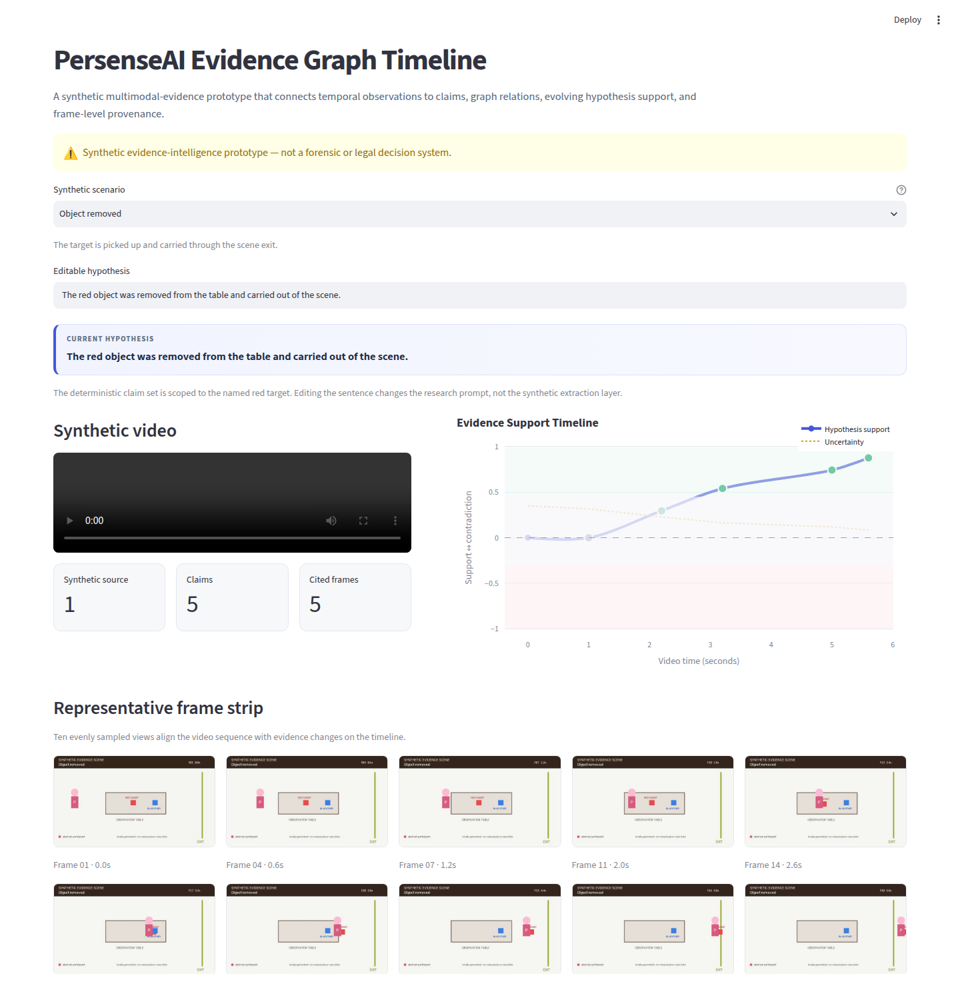
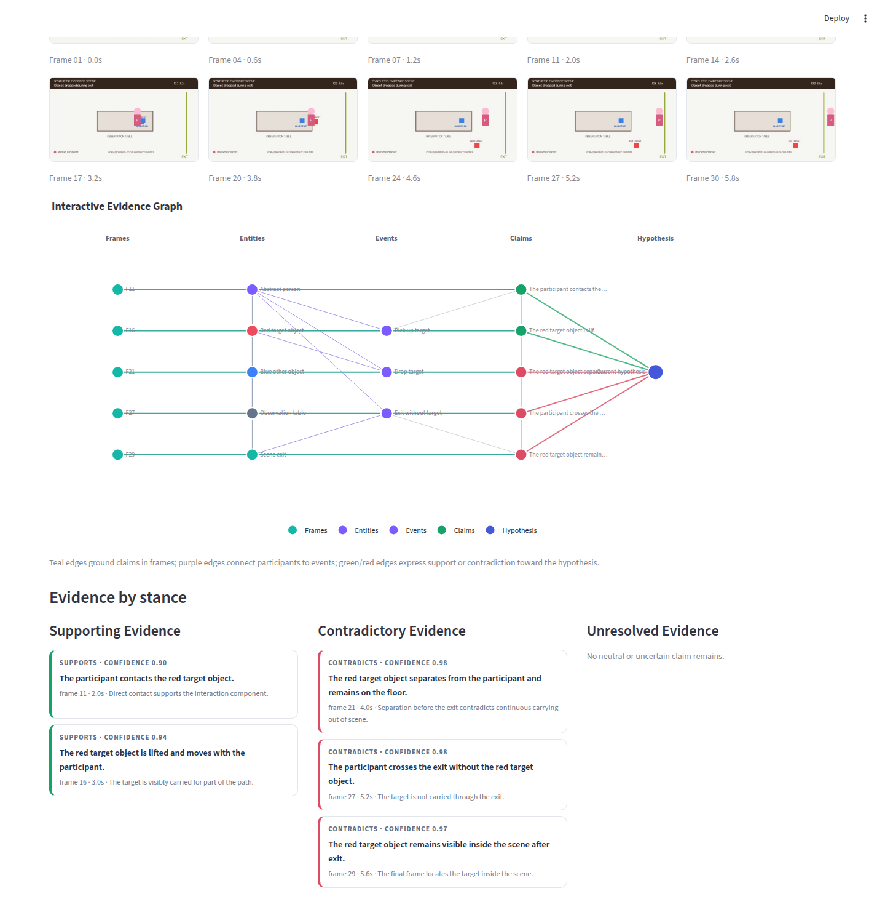

Project 02 · Provenance-backed reasoning
Evidence Graph Timeline
How do observations become provenance-backed claims?

What the demo shows
Synthetic temporal observations become claims linked to entities, events, frames, and a bounded hypothesis. The interface separates supporting, contradictory, and unresolved evidence while showing the moment the hypothesis state changes.
Implementation approach
Deterministic authored claims build a graph and a temporal support curve with frame-level source links. This public page exports only reviewed presentation images.
Public origins and related work
The work is informed by knowledge graphs, temporal reasoning, natural-language-inference stance labels, and W3C provenance concepts. Their use here is an implementation choice, not a novelty claim.
Limitations
The graph does not establish truth, causality, source independence, calibrated confidence, forensic validity, or legal weight. It covers four bounded synthetic scenarios.
Provenance statement
Abstract shapes, frames, annotations, claims, and source identifiers were independently generated for the demo. No real case, person, recording, or private source is published.
Screenshot gallery

Compare notes
Working on temporal evidence graphs, contradiction, or provenance-aware retrieval?
Share feedback